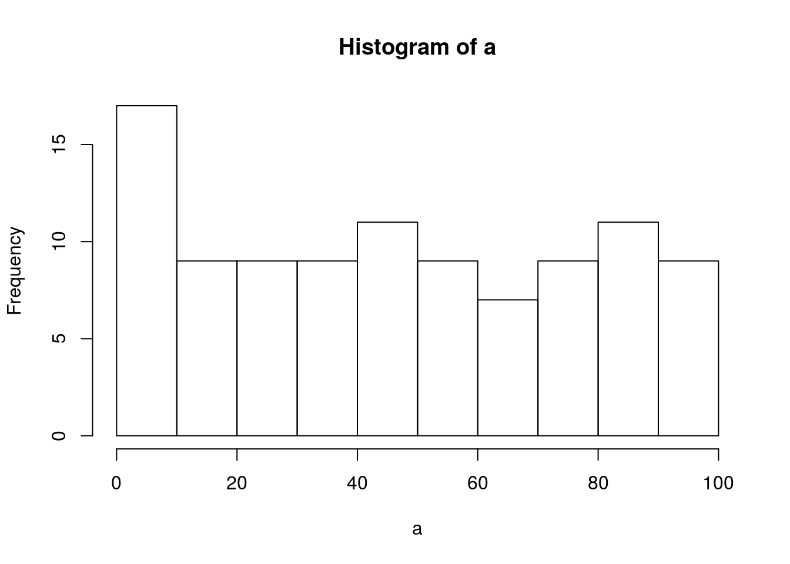

2019 | Feb | 23 Last compiled: 2019-02-24
die<-sample(c(1,2,3,4,5,6),1)
print(die)## [1] 3ladders<-data.frame(start=c(1,4,9,21,28,36,51,71,80),end=c(37,14,31,42,84,44,67,91,100))
slides<-data.frame(start=c(98,95,93,87,64,62,56,49,47,16), end=c(78,75,73,24,60,19,53,11,26,6))
loc<-0
nroll<-0
slide<-0
ladder<-0
die## [1] 3 loc<-loc+die
nroll<-nroll+1
if(any(ladders$start %in% loc))
{
loc<-ladders$end[ladders$start %in% loc]
ladder<- ladder +1
}
if(any(slides$start %in% loc))
{
loc<-slides$end[slides$start %in% loc]
slide<-slide+1
}
print(loc)## [1] 32019 | Feb | 23 Last compiled: 2019-02-24
alp<-"abcdefghijklmnopqrstuvwxyz"
alph<-strsplit(alp,"")[[1]]
#print(alph)
scralph<-sample(alph)
#print(scralph)
encrypkey<-data.frame(alph,scralph)
#print(encrypkey[,3])
encryption<-function(input,key)
{
enc_alph<-c()
for(i in 1:length(input))
{
o_alph<-input[i]
#print(o_alph)
n_alph <- as.character(key[key$alph==o_alph,]$scralph)
#print(c(o_alph, n_alph))
enc_alph[i]<-n_alph
#print(enc_alph)
}
return(enc_alph)
}
deencryption<-function(input,key)
{
denc_alph<-c()
for(i in 1:length(input))
{
c_alph<-input[i]
d_alph<-as.character(key[key$scralph==c_alph,]$alph)
denc_alph[i]<-d_alph
}
return(denc_alph)
}
code<-encryption(alph,encrypkey)
print(code)## [1] "a" "r" "c" "k" "b" "f" "n" "m" "u" "d" "i" "y" "z" "o" "s" "h" "l"
## [18] "v" "j" "q" "t" "p" "e" "g" "w" "x"deencryption(code,encrypkey)## [1] "a" "b" "c" "d" "e" "f" "g" "h" "i" "j" "k" "l" "m" "n" "o" "p" "q"
## [18] "r" "s" "t" "u" "v" "w" "x" "y" "z"2019 | Feb | 23 Last compiled: 2019-02-24
r<-1:10
names(r)<-r
a<-r%o%r
print(a)## 1 2 3 4 5 6 7 8 9 10
## 1 1 2 3 4 5 6 7 8 9 10
## 2 2 4 6 8 10 12 14 16 18 20
## 3 3 6 9 12 15 18 21 24 27 30
## 4 4 8 12 16 20 24 28 32 36 40
## 5 5 10 15 20 25 30 35 40 45 50
## 6 6 12 18 24 30 36 42 48 54 60
## 7 7 14 21 28 35 42 49 56 63 70
## 8 8 16 24 32 40 48 56 64 72 80
## 9 9 18 27 36 45 54 63 72 81 90
## 10 10 20 30 40 50 60 70 80 90 100matrix(a,ncol = 10,nrow = 10)## [,1] [,2] [,3] [,4] [,5] [,6] [,7] [,8] [,9] [,10]
## [1,] 1 2 3 4 5 6 7 8 9 10
## [2,] 2 4 6 8 10 12 14 16 18 20
## [3,] 3 6 9 12 15 18 21 24 27 30
## [4,] 4 8 12 16 20 24 28 32 36 40
## [5,] 5 10 15 20 25 30 35 40 45 50
## [6,] 6 12 18 24 30 36 42 48 54 60
## [7,] 7 14 21 28 35 42 49 56 63 70
## [8,] 8 16 24 32 40 48 56 64 72 80
## [9,] 9 18 27 36 45 54 63 72 81 90
## [10,] 10 20 30 40 50 60 70 80 90 1002019 | Feb | 23 Last compiled: 2019-02-24
a<-floor(runif(100,min=0,max=100))
hist(a)
b<-sort(unique(a))
#print(b)
c<-unlist(list(rep(0,length(b))))
#print(c)
for(i in a)
{
d<-match(i,b)
c[d]=c[d]+1
}
#print(c)
for(i in 1:length(b))
{
print.table(c(b[i],c[i]))
}## [1] 0 3
## [1] 1 1
## [1] 2 1
## [1] 4 4
## [1] 5 2
## [1] 6 2
## [1] 7 1
## [1] 8 2
## [1] 9 1
## [1] 11 1
## [1] 12 1
## [1] 15 2
## [1] 16 1
## [1] 17 1
## [1] 19 2
## [1] 20 1
## [1] 24 1
## [1] 26 2
## [1] 27 2
## [1] 29 3
## [1] 30 1
## [1] 31 2
## [1] 32 2
## [1] 34 1
## [1] 36 1
## [1] 38 1
## [1] 39 2
## [1] 41 1
## [1] 42 2
## [1] 43 1
## [1] 46 1
## [1] 47 2
## [1] 48 1
## [1] 49 2
## [1] 50 1
## [1] 51 1
## [1] 52 1
## [1] 53 2
## [1] 54 1
## [1] 55 1
## [1] 56 1
## [1] 57 1
## [1] 58 1
## [1] 61 2
## [1] 62 1
## [1] 63 1
## [1] 65 1
## [1] 68 1
## [1] 69 1
## [1] 73 1
## [1] 74 1
## [1] 75 1
## [1] 77 2
## [1] 78 1
## [1] 79 3
## [1] 81 2
## [1] 82 1
## [1] 83 2
## [1] 84 2
## [1] 86 1
## [1] 89 3
## [1] 91 3
## [1] 93 3
## [1] 97 2
## [1] 99 1g<-runif(10^6,min=0,max=100)
hist(g)2019 | Feb | 23 Last compiled: 2019-02-24
a<-"all you need to do is completely make an ass of yourself and laugh it off to realise that life is not so bad after all."
b<-unlist(strsplit(a,split = ""))
#print(b)
c<-unique(b)
#print(c)
d<-unlist(list(rep(0,length(c))))
#print(length(d))
for(i in b)
{
e<-match(i,c)
d[e]=d[e]+1
}
#print(d)
#print(c)
for (i in 1:length(c))
{
print(c(c[i],d[i]))
}## [1] "a" "11"
## [1] "l" "10"
## [1] " " "25"
## [1] "y" "3"
## [1] "o" "10"
## [1] "u" "3"
## [1] "n" "4"
## [1] "e" "10"
## [1] "d" "4"
## [1] "t" "8"
## [1] "i" "5"
## [1] "s" "7"
## [1] "c" "1"
## [1] "m" "2"
## [1] "p" "1"
## [1] "k" "1"
## [1] "f" "6"
## [1] "r" "3"
## [1] "g" "1"
## [1] "h" "2"
## [1] "b" "1"
## [1] "." "1"2019 | Feb | 23 Last compiled: 2019-02-24
a<-seq(1,100,1)
for (i in a)
{
if(i%%3==0 & i%%5==0)
{
i<-"FizzBuzz"
print(i)
}
else if(i%%5==0)
{
i<-"Buzz"
print(i)
}
else if(i%%3==0)
{
i<-"Fizz"
print(i)
}
else if(i)
{
print(i)
}
}## [1] 1
## [1] 2
## [1] "Fizz"
## [1] 4
## [1] "Buzz"
## [1] "Fizz"
## [1] 7
## [1] 8
## [1] "Fizz"
## [1] "Buzz"
## [1] 11
## [1] "Fizz"
## [1] 13
## [1] 14
## [1] "FizzBuzz"
## [1] 16
## [1] 17
## [1] "Fizz"
## [1] 19
## [1] "Buzz"
## [1] "Fizz"
## [1] 22
## [1] 23
## [1] "Fizz"
## [1] "Buzz"
## [1] 26
## [1] "Fizz"
## [1] 28
## [1] 29
## [1] "FizzBuzz"
## [1] 31
## [1] 32
## [1] "Fizz"
## [1] 34
## [1] "Buzz"
## [1] "Fizz"
## [1] 37
## [1] 38
## [1] "Fizz"
## [1] "Buzz"
## [1] 41
## [1] "Fizz"
## [1] 43
## [1] 44
## [1] "FizzBuzz"
## [1] 46
## [1] 47
## [1] "Fizz"
## [1] 49
## [1] "Buzz"
## [1] "Fizz"
## [1] 52
## [1] 53
## [1] "Fizz"
## [1] "Buzz"
## [1] 56
## [1] "Fizz"
## [1] 58
## [1] 59
## [1] "FizzBuzz"
## [1] 61
## [1] 62
## [1] "Fizz"
## [1] 64
## [1] "Buzz"
## [1] "Fizz"
## [1] 67
## [1] 68
## [1] "Fizz"
## [1] "Buzz"
## [1] 71
## [1] "Fizz"
## [1] 73
## [1] 74
## [1] "FizzBuzz"
## [1] 76
## [1] 77
## [1] "Fizz"
## [1] 79
## [1] "Buzz"
## [1] "Fizz"
## [1] 82
## [1] 83
## [1] "Fizz"
## [1] "Buzz"
## [1] 86
## [1] "Fizz"
## [1] 88
## [1] 89
## [1] "FizzBuzz"
## [1] 91
## [1] 92
## [1] "Fizz"
## [1] 94
## [1] "Buzz"
## [1] "Fizz"
## [1] 97
## [1] 98
## [1] "Fizz"
## [1] "Buzz"2019 | Feb | 23 Last compiled: 2019-02-24
here<-matrix(floor(runif(100, min = 1,max = 100)),nrow = 20,ncol = 20)
tmpfil<-tempfile("data")
write.table(here,tmpfil)
read.table(tmpfil)## V1 V2 V3 V4 V5 V6 V7 V8 V9 V10 V11 V12 V13 V14 V15 V16 V17 V18 V19 V20
## 1 30 95 69 11 66 30 95 69 11 66 30 95 69 11 66 30 95 69 11 66
## 2 67 95 6 98 22 67 95 6 98 22 67 95 6 98 22 67 95 6 98 22
## 3 66 38 90 45 2 66 38 90 45 2 66 38 90 45 2 66 38 90 45 2
## 4 14 90 39 69 92 14 90 39 69 92 14 90 39 69 92 14 90 39 69 92
## 5 29 19 39 1 38 29 19 39 1 38 29 19 39 1 38 29 19 39 1 38
## 6 54 14 61 1 21 54 14 61 1 21 54 14 61 1 21 54 14 61 1 21
## 7 93 34 15 27 78 93 34 15 27 78 93 34 15 27 78 93 34 15 27 78
## 8 27 62 62 72 85 27 62 62 72 85 27 62 62 72 85 27 62 62 72 85
## 9 28 84 22 88 8 28 84 22 88 8 28 84 22 88 8 28 84 22 88 8
## 10 55 42 69 68 65 55 42 69 68 65 55 42 69 68 65 55 42 69 68 65
## 11 28 84 68 67 92 28 84 68 67 92 28 84 68 67 92 28 84 68 67 92
## 12 65 58 34 51 79 65 58 34 51 79 65 58 34 51 79 65 58 34 51 79
## 13 95 62 6 48 22 95 62 6 48 22 95 62 6 48 22 95 62 6 48 22
## 14 62 11 81 75 28 62 11 81 75 28 62 11 81 75 28 62 11 81 75 28
## 15 85 44 82 9 50 85 44 82 9 50 85 44 82 9 50 85 44 82 9 50
## 16 9 68 7 48 36 9 68 7 48 36 9 68 7 48 36 9 68 7 48 36
## 17 43 73 31 31 16 43 73 31 31 16 43 73 31 31 16 43 73 31 31 16
## 18 25 30 73 12 64 25 30 73 12 64 25 30 73 12 64 25 30 73 12 64
## 19 4 9 83 65 86 4 9 83 65 86 4 9 83 65 86 4 9 83 65 86
## 20 2 10 50 95 9 2 10 50 95 9 2 10 50 95 9 2 10 50 95 9here2<-matrix(floor(runif(100, min = 1,max = 100)),nrow = 20,ncol = 20)
tmpfil2<-tempfile("data")
write.csv(here2,tmpfil2,row.names = FALSE,col.names = F)
read.csv(tmpfil2)## V1 V2 V3 V4 V5 V6 V7 V8 V9 V10 V11 V12 V13 V14 V15 V16 V17 V18 V19 V20
## 1 48 72 97 47 15 48 72 97 47 15 48 72 97 47 15 48 72 97 47 15
## 2 85 84 75 80 58 85 84 75 80 58 85 84 75 80 58 85 84 75 80 58
## 3 48 2 3 16 49 48 2 3 16 49 48 2 3 16 49 48 2 3 16 49
## 4 32 41 32 48 23 32 41 32 48 23 32 41 32 48 23 32 41 32 48 23
## 5 19 72 78 86 87 19 72 78 86 87 19 72 78 86 87 19 72 78 86 87
## 6 31 30 67 7 5 31 30 67 7 5 31 30 67 7 5 31 30 67 7 5
## 7 47 14 43 70 46 47 14 43 70 46 47 14 43 70 46 47 14 43 70 46
## 8 53 71 82 54 91 53 71 82 54 91 53 71 82 54 91 53 71 82 54 91
## 9 19 19 95 9 26 19 19 95 9 26 19 19 95 9 26 19 19 95 9 26
## 10 93 98 86 65 76 93 98 86 65 76 93 98 86 65 76 93 98 86 65 76
## 11 99 40 78 34 20 99 40 78 34 20 99 40 78 34 20 99 40 78 34 20
## 12 22 7 91 42 34 22 7 91 42 34 22 7 91 42 34 22 7 91 42 34
## 13 44 41 83 4 96 44 41 83 4 96 44 41 83 4 96 44 41 83 4 96
## 14 37 10 46 28 2 37 10 46 28 2 37 10 46 28 2 37 10 46 28 2
## 15 33 62 7 21 22 33 62 7 21 22 33 62 7 21 22 33 62 7 21 22
## 16 38 56 36 53 82 38 56 36 53 82 38 56 36 53 82 38 56 36 53 82
## 17 42 1 40 82 41 42 1 40 82 41 42 1 40 82 41 42 1 40 82 41
## 18 24 36 65 45 53 24 36 65 45 53 24 36 65 45 53 24 36 65 45 53
## 19 6 62 76 49 14 6 62 76 49 14 6 62 76 49 14 6 62 76 49 14
## 20 48 41 90 67 15 48 41 90 67 15 48 41 90 67 15 48 41 90 67 152019 | Feb | 23 Last compiled: 2019-02-24
here<-matrix(floor(runif(100, min = 1,max = 100)),nrow = 20,ncol = 20)
print(here)## [,1] [,2] [,3] [,4] [,5] [,6] [,7] [,8] [,9] [,10] [,11] [,12] [,13]
## [1,] 38 25 98 95 81 38 25 98 95 81 38 25 98
## [2,] 62 2 68 33 44 62 2 68 33 44 62 2 68
## [3,] 30 70 46 15 56 30 70 46 15 56 30 70 46
## [4,] 71 11 84 10 68 71 11 84 10 68 71 11 84
## [5,] 34 28 7 53 84 34 28 7 53 84 34 28 7
## [6,] 7 39 23 94 9 7 39 23 94 9 7 39 23
## [7,] 39 78 85 9 97 39 78 85 9 97 39 78 85
## [8,] 42 59 3 18 75 42 59 3 18 75 42 59 3
## [9,] 93 73 29 69 5 93 73 29 69 5 93 73 29
## [10,] 36 74 55 83 10 36 74 55 83 10 36 74 55
## [11,] 50 69 30 96 92 50 69 30 96 92 50 69 30
## [12,] 64 32 22 35 12 64 32 22 35 12 64 32 22
## [13,] 27 54 11 8 71 27 54 11 8 71 27 54 11
## [14,] 45 55 54 42 46 45 55 54 42 46 45 55 54
## [15,] 52 80 10 47 99 52 80 10 47 99 52 80 10
## [16,] 33 75 59 78 38 33 75 59 78 38 33 75 59
## [17,] 5 38 69 95 94 5 38 69 95 94 5 38 69
## [18,] 46 95 54 91 77 46 95 54 91 77 46 95 54
## [19,] 74 34 37 67 88 74 34 37 67 88 74 34 37
## [20,] 84 67 64 65 41 84 67 64 65 41 84 67 64
## [,14] [,15] [,16] [,17] [,18] [,19] [,20]
## [1,] 95 81 38 25 98 95 81
## [2,] 33 44 62 2 68 33 44
## [3,] 15 56 30 70 46 15 56
## [4,] 10 68 71 11 84 10 68
## [5,] 53 84 34 28 7 53 84
## [6,] 94 9 7 39 23 94 9
## [7,] 9 97 39 78 85 9 97
## [8,] 18 75 42 59 3 18 75
## [9,] 69 5 93 73 29 69 5
## [10,] 83 10 36 74 55 83 10
## [11,] 96 92 50 69 30 96 92
## [12,] 35 12 64 32 22 35 12
## [13,] 8 71 27 54 11 8 71
## [14,] 42 46 45 55 54 42 46
## [15,] 47 99 52 80 10 47 99
## [16,] 78 38 33 75 59 78 38
## [17,] 95 94 5 38 69 95 94
## [18,] 91 77 46 95 54 91 77
## [19,] 67 88 74 34 37 67 88
## [20,] 65 41 84 67 64 65 412019 | Feb | 23 Last compiled: 2019-02-24
x<-matrix(1:10, ncol = 5)
fil<-tempfile("data")
write(x,fil)
read.csv(fil)## X1.2.3.4.5
## 1 6 7 8 9 102019 | Feb | 23 Last compiled: 2019-02-24
tfile<-read.delim("http://www.sthda.com/upload/boxplot_format.txt")
t2file<-read.delim("https://www.w3schools.com/tags/tag_input.asp")
head(tfile)## Nom variable Group
## 1 IND1 10 A
## 2 IND2 7 A
## 3 IND3 20 A
## 4 IND4 14 A
## 5 IND5 14 A
## 6 IND6 12 Ahead(t2file)## X..DOCTYPE.html.
## 1 <html lang=en-US>
## 2 <head>
## 3 <title>HTML input tag</title>
## 4 <meta charset=utf-8>
## 5 <meta name=viewport content=width=device-width, initial-scale=1>
## 6 <meta name=Keywords content=HTML,CSS,JavaScript,SQL,PHP,jQuery,XML,DOM,Bootstrap,Python,Web development,W3C,tutorials,programming,training,learning,quiz,primer,lessons,references,examples,exercises,source code,colors,demos,tips>2019 | Feb | 23 Last compiled: 2019-02-24
t1<-Sys.time()
a<-"The sky is clear; the stars are twinkling.
She always speaks to him in a loud voice.
The book is in front of the table.
I would have gotten the promotion, but my attendance wasn’t good enough.
If you like tuna and tomato sauce- try combining the two. It’s really not as bad as it sounds."
b<-unlist(strsplit(a,split = "e"))
length(b)-1## [1] 20t2<-Sys.time()
runtime<-t2-t1
print(runtime)## Time difference of 0.004576445 secs2019 | Feb | 23 Last compiled: 2019-02-24
curr.time<-(as.numeric(Sys.time()))*1000
print(curr.time,digits=15)## [1] 1550972165058.732019 | Feb | 19 Last compiled: 2019-02-24
a<-"I was very proud of my nickname throughout high school but today- I couldn’t be any different to what my nickname was."
c<-unlist(strsplit(a,split = " "))
b<-"nickname"
b%in%c## [1] TRUEb%in%a #not sure why this doesn't work yet...## [1] FALSEtest_word <- "hello"
test_sentence <-"is the word hello in this sentence"
test_word%in%test_sentence #Shouldershrugs## [1] FALSE2019 | Feb | 19 Last compiled: 2019-02-24
a<-"The sky is clear; the stars are twinkling.
She always speaks to him in a loud voice.
The book is in front of the table.
I would have gotten the promotion, but my attendance wasn’t good enough.
If you like tuna and tomato sauce- try combining the two. It’s really not as bad as it sounds."
b<-unlist(strsplit(a,split = "e"))
print(b)## [1] "Th" " sky is cl"
## [3] "ar; th" " stars ar"
## [5] " twinkling.\nSh" " always sp"
## [7] "aks to him in a loud voic" ".\nTh"
## [9] " book is in front of th" " tabl"
## [11] ".\nI would hav" " gott"
## [13] "n th" " promotion, but my att"
## [15] "ndanc" " wasn’t good "
## [17] "nough.\nIf you lik" " tuna and tomato sauc"
## [19] "- try combining th" " two. It’s r"
## [21] "ally not as bad as it sounds."length(b)-1## [1] 202019 | Feb | 19 Last compiled: 2019-02-24
a<-"Christmas is coming.
I want to buy a onesie… but know it won’t suit me.
She borrowed the book from him many years ago and hasn't yet returned it.
If the Easter Bunny and the Tooth Fairy had babies would they take your teeth and leave chocolate for you?
Check back tomorrow; I will see if the book has arrived.
Cats are good pets, for they are clean and are not noisy.
This is the last random sentence I will be writing and I am going to stop mid-sent
We have never been to Asia, nor have we visited Africa.
The river stole the gods.
She always speaks to him in a loud voice."
b<-unlist(strsplit(a,split = "[.?]"))
print(b)## [1] "Christmas is coming"
## [2] "\nI want to buy a onesie… but know it won’t suit me"
## [3] "\nShe borrowed the book from him many years ago and hasn't yet returned it"
## [4] "\nIf the Easter Bunny and the Tooth Fairy had babies would they take your teeth and leave chocolate for you"
## [5] "\nCheck back tomorrow; I will see if the book has arrived"
## [6] "\nCats are good pets, for they are clean and are not noisy"
## [7] "\nThis is the last random sentence I will be writing and I am going to stop mid-sent\nWe have never been to Asia, nor have we visited Africa"
## [8] "\nThe river stole the gods"
## [9] "\nShe always speaks to him in a loud voice"length(b)## [1] 92019 | Feb | 19 Last compiled: 2019-02-24
a<-"Writing a list of random sentences is harder than I initially thought it would be."
b<-unlist(strsplit(a,split = " "))
length(b)## [1] 152019 | Feb | 19 Last compiled: 2019-02-24
a<-"adskfjhkadsjfh"
b<-unlist(strsplit(a,split = ""))
print(b)## [1] "a" "d" "s" "k" "f" "j" "h" "k" "a" "d" "s" "j" "f" "h"length(b)## [1] 142019 | Feb | 19 Last compiled: 2019-02-24
my_mean<-function(x)
{
return(sum(x)/length(x))
}
t<-c(1:20)
my_mean(t)## [1] 10.5my_mode<-function(x)
{
a<-sort(x)
b<-unique(a)
maxn<-0
countn<-0
for (i in b)
{
c<-a[a==i]
if(length(c)>countn)
{
maxn=i
countn=length(c)
}
}
return(maxn)
}
my_mode(c(1,1,1,10,9,8,8,5,5,5,5))## [1] 5my_median<-function(x)
{
a<-sort(x)
b<-length(x)
c<-floor(b/2)
if(b%%2==0)
{
return(mean(c(a[c],a[c+1])))
}
else
{
return(a[c+1])
}
}
my_median(c(1,2,3,4,5))## [1] 3my_median(1:10)## [1] 5.5my_range<-function(x)
{
sort(x)
print(c(min(x),max(x)))
}
my_range(c(1,1,1,10,9,8,8,5,5,5,5))## [1] 1 10my_sd<-function(x)
{
avgx<-mean(x)
sd<-0
for (i in x)
{
sd<-(i-avgx)^2 + sd
}
return(sqrt(sd/(length(x)-1)))
}
my_sd(c(-5,1,8,7,2))## [1] 5.224942019 | Feb | 19 Last compiled: 2019-02-24
#prints all numbers
runif(100, min = 1,max = 100)## [1] 30.212287 70.499171 17.211706 45.875525 91.230151 45.891522 76.617654
## [8] 22.469177 75.705058 68.663643 3.991438 55.126360 31.786575 61.241051
## [15] 46.731561 30.777947 24.541081 44.292469 26.986292 79.882283 99.164922
## [22] 27.026594 36.939166 47.863292 27.245633 29.403701 63.045200 9.526829
## [29] 16.188594 36.432349 85.038327 32.936716 25.754183 14.126142 14.030307
## [36] 10.530131 47.988263 11.541608 90.512512 21.897520 14.556532 34.236270
## [43] 1.070716 28.454776 52.080230 17.278344 93.325512 22.137026 14.525612
## [50] 8.299973 96.048217 3.255836 99.853881 79.059748 8.958203 44.615354
## [57] 99.157964 60.028845 25.801294 28.444160 55.583622 6.022718 1.422141
## [64] 86.226553 47.725912 5.866169 74.568901 77.447020 95.928667 74.583714
## [71] 60.030920 30.593943 88.619706 50.118075 87.575719 30.079412 95.577505
## [78] 34.332063 28.165155 44.666581 55.049315 64.140242 70.959252 63.073586
## [85] 52.060601 3.965373 43.863690 43.968588 50.278989 18.582345 92.862072
## [92] 99.590538 24.124638 47.403864 85.182698 56.049071 52.474965 98.943012
## [99] 76.384578 87.711786#prints integers
floor(runif(100, min = 1,max = 100))## [1] 88 49 54 38 26 27 73 70 19 65 45 52 89 85 15 29 75 51 69 73 73 42 5
## [24] 22 70 64 68 14 85 31 75 89 91 96 15 16 95 11 10 78 92 60 29 94 41 45
## [47] 73 35 9 88 44 4 55 48 62 11 19 1 87 65 83 38 85 8 73 90 96 26 6
## [70] 95 53 28 13 39 94 42 11 39 12 66 80 91 54 21 64 44 46 26 84 53 56 48
## [93] 81 10 97 40 72 35 96 492019 | Feb | 19 Last compiled: 2019-02-24
#prints all numbers
runif(100)## [1] 0.87620071 0.99344322 0.16386900 0.03596641 0.85435628 0.86111610
## [7] 0.09280666 0.60765914 0.01931763 0.13220752 0.98811539 0.54339457
## [13] 0.61836642 0.19564443 0.14413336 0.25568769 0.59907914 0.79724999
## [19] 0.60450796 0.33504708 0.58988194 0.86657386 0.43315133 0.39815039
## [25] 0.10367196 0.96203169 0.96009480 0.56552476 0.69477668 0.15724835
## [31] 0.99899586 0.92530818 0.60501281 0.33671421 0.10222953 0.40875457
## [37] 0.16671628 0.80759128 0.43769508 0.92103693 0.04653107 0.30643860
## [43] 0.82301328 0.47048116 0.56675375 0.38254365 0.47177306 0.19812963
## [49] 0.95234215 0.83605974 0.79339982 0.66007251 0.21083375 0.52094287
## [55] 0.08921050 0.42433984 0.30220013 0.16707737 0.30371484 0.87622999
## [61] 0.01824981 0.80472127 0.32744621 0.83461472 0.74950871 0.04876836
## [67] 0.95762343 0.30218893 0.47385188 0.87726113 0.31967187 0.91224697
## [73] 0.35851951 0.39750017 0.60031193 0.32874407 0.04147142 0.38609532
## [79] 0.95251378 0.77801876 0.18881976 0.41889168 0.38290157 0.26792014
## [85] 0.53327786 0.48514840 0.55225747 0.30663297 0.02155712 0.18844699
## [91] 0.29834271 0.84541449 0.20332119 0.19369509 0.07517299 0.67206356
## [97] 0.79632683 0.10191105 0.44433721 0.616501892019 | Feb | 19 Last compiled: 2019-02-24
prime<-function(x,y)
{
a<-seq(x,y,1)
for(i in a)
{
c<-"Prime"
if(i<=1){ c<-"Not Prime"}
if (i>3)
{
b<-floor(sqrt(i))
for(j in 2:b)
{
if(i%%j==0)
{
c<-"Not Prime"
}
}
}
if(c=="Prime")
{
print(c(c,i))
}
}
}
prime(1,1000)## [1] "Prime" "2"
## [1] "Prime" "3"
## [1] "Prime" "5"
## [1] "Prime" "7"
## [1] "Prime" "11"
## [1] "Prime" "13"
## [1] "Prime" "17"
## [1] "Prime" "19"
## [1] "Prime" "23"
## [1] "Prime" "29"
## [1] "Prime" "31"
## [1] "Prime" "37"
## [1] "Prime" "41"
## [1] "Prime" "43"
## [1] "Prime" "47"
## [1] "Prime" "53"
## [1] "Prime" "59"
## [1] "Prime" "61"
## [1] "Prime" "67"
## [1] "Prime" "71"
## [1] "Prime" "73"
## [1] "Prime" "79"
## [1] "Prime" "83"
## [1] "Prime" "89"
## [1] "Prime" "97"
## [1] "Prime" "101"
## [1] "Prime" "103"
## [1] "Prime" "107"
## [1] "Prime" "109"
## [1] "Prime" "113"
## [1] "Prime" "127"
## [1] "Prime" "131"
## [1] "Prime" "137"
## [1] "Prime" "139"
## [1] "Prime" "149"
## [1] "Prime" "151"
## [1] "Prime" "157"
## [1] "Prime" "163"
## [1] "Prime" "167"
## [1] "Prime" "173"
## [1] "Prime" "179"
## [1] "Prime" "181"
## [1] "Prime" "191"
## [1] "Prime" "193"
## [1] "Prime" "197"
## [1] "Prime" "199"
## [1] "Prime" "211"
## [1] "Prime" "223"
## [1] "Prime" "227"
## [1] "Prime" "229"
## [1] "Prime" "233"
## [1] "Prime" "239"
## [1] "Prime" "241"
## [1] "Prime" "251"
## [1] "Prime" "257"
## [1] "Prime" "263"
## [1] "Prime" "269"
## [1] "Prime" "271"
## [1] "Prime" "277"
## [1] "Prime" "281"
## [1] "Prime" "283"
## [1] "Prime" "293"
## [1] "Prime" "307"
## [1] "Prime" "311"
## [1] "Prime" "313"
## [1] "Prime" "317"
## [1] "Prime" "331"
## [1] "Prime" "337"
## [1] "Prime" "347"
## [1] "Prime" "349"
## [1] "Prime" "353"
## [1] "Prime" "359"
## [1] "Prime" "367"
## [1] "Prime" "373"
## [1] "Prime" "379"
## [1] "Prime" "383"
## [1] "Prime" "389"
## [1] "Prime" "397"
## [1] "Prime" "401"
## [1] "Prime" "409"
## [1] "Prime" "419"
## [1] "Prime" "421"
## [1] "Prime" "431"
## [1] "Prime" "433"
## [1] "Prime" "439"
## [1] "Prime" "443"
## [1] "Prime" "449"
## [1] "Prime" "457"
## [1] "Prime" "461"
## [1] "Prime" "463"
## [1] "Prime" "467"
## [1] "Prime" "479"
## [1] "Prime" "487"
## [1] "Prime" "491"
## [1] "Prime" "499"
## [1] "Prime" "503"
## [1] "Prime" "509"
## [1] "Prime" "521"
## [1] "Prime" "523"
## [1] "Prime" "541"
## [1] "Prime" "547"
## [1] "Prime" "557"
## [1] "Prime" "563"
## [1] "Prime" "569"
## [1] "Prime" "571"
## [1] "Prime" "577"
## [1] "Prime" "587"
## [1] "Prime" "593"
## [1] "Prime" "599"
## [1] "Prime" "601"
## [1] "Prime" "607"
## [1] "Prime" "613"
## [1] "Prime" "617"
## [1] "Prime" "619"
## [1] "Prime" "631"
## [1] "Prime" "641"
## [1] "Prime" "643"
## [1] "Prime" "647"
## [1] "Prime" "653"
## [1] "Prime" "659"
## [1] "Prime" "661"
## [1] "Prime" "673"
## [1] "Prime" "677"
## [1] "Prime" "683"
## [1] "Prime" "691"
## [1] "Prime" "701"
## [1] "Prime" "709"
## [1] "Prime" "719"
## [1] "Prime" "727"
## [1] "Prime" "733"
## [1] "Prime" "739"
## [1] "Prime" "743"
## [1] "Prime" "751"
## [1] "Prime" "757"
## [1] "Prime" "761"
## [1] "Prime" "769"
## [1] "Prime" "773"
## [1] "Prime" "787"
## [1] "Prime" "797"
## [1] "Prime" "809"
## [1] "Prime" "811"
## [1] "Prime" "821"
## [1] "Prime" "823"
## [1] "Prime" "827"
## [1] "Prime" "829"
## [1] "Prime" "839"
## [1] "Prime" "853"
## [1] "Prime" "857"
## [1] "Prime" "859"
## [1] "Prime" "863"
## [1] "Prime" "877"
## [1] "Prime" "881"
## [1] "Prime" "883"
## [1] "Prime" "887"
## [1] "Prime" "907"
## [1] "Prime" "911"
## [1] "Prime" "919"
## [1] "Prime" "929"
## [1] "Prime" "937"
## [1] "Prime" "941"
## [1] "Prime" "947"
## [1] "Prime" "953"
## [1] "Prime" "967"
## [1] "Prime" "971"
## [1] "Prime" "977"
## [1] "Prime" "983"
## [1] "Prime" "991"
## [1] "Prime" "997"2019 | Feb | 19 Last compiled: 2019-02-24
seq(1,100,2)## [1] 1 3 5 7 9 11 13 15 17 19 21 23 25 27 29 31 33 35 37 39 41 43 45
## [24] 47 49 51 53 55 57 59 61 63 65 67 69 71 73 75 77 79 81 83 85 87 89 91
## [47] 93 95 97 99a<-1:100
for (i in a)
{
if (i%%2!=0)
{
print(i)
}
}## [1] 1
## [1] 3
## [1] 5
## [1] 7
## [1] 9
## [1] 11
## [1] 13
## [1] 15
## [1] 17
## [1] 19
## [1] 21
## [1] 23
## [1] 25
## [1] 27
## [1] 29
## [1] 31
## [1] 33
## [1] 35
## [1] 37
## [1] 39
## [1] 41
## [1] 43
## [1] 45
## [1] 47
## [1] 49
## [1] 51
## [1] 53
## [1] 55
## [1] 57
## [1] 59
## [1] 61
## [1] 63
## [1] 65
## [1] 67
## [1] 69
## [1] 71
## [1] 73
## [1] 75
## [1] 77
## [1] 79
## [1] 81
## [1] 83
## [1] 85
## [1] 87
## [1] 89
## [1] 91
## [1] 93
## [1] 95
## [1] 97
## [1] 992019 | Feb | 19 Last compiled: 2019-02-24
Sum of All Integers(Random) Sol:
rsum<-function(x,y){return(sum(seq(x,y,1)))}
rsum(1,2)## [1] 3rsum(1,10)## [1] 552019 | Jan | 30 Last compiled: 2019-02-24
sum function Sol:
a<-c()
for(i in 1:100) {
a<-c(a,i)
}
print(a)## [1] 1 2 3 4 5 6 7 8 9 10 11 12 13 14 15 16 17
## [18] 18 19 20 21 22 23 24 25 26 27 28 29 30 31 32 33 34
## [35] 35 36 37 38 39 40 41 42 43 44 45 46 47 48 49 50 51
## [52] 52 53 54 55 56 57 58 59 60 61 62 63 64 65 66 67 68
## [69] 69 70 71 72 73 74 75 76 77 78 79 80 81 82 83 84 85
## [86] 86 87 88 89 90 91 92 93 94 95 96 97 98 99 100b<-sum(a)
print(b)## [1] 5050Loop Sol:
c<-0
for(i in 1:100) {
c<-c+i
}
print(c)## [1] 50502019 | Jan | 29 Last compiled: 2019-02-24
Loop Sol. #1:
Alex<-c()
for (i in 1:100) {
Alex<-c(Alex,i)
}
print(Alex)## [1] 1 2 3 4 5 6 7 8 9 10 11 12 13 14 15 16 17
## [18] 18 19 20 21 22 23 24 25 26 27 28 29 30 31 32 33 34
## [35] 35 36 37 38 39 40 41 42 43 44 45 46 47 48 49 50 51
## [52] 52 53 54 55 56 57 58 59 60 61 62 63 64 65 66 67 68
## [69] 69 70 71 72 73 74 75 76 77 78 79 80 81 82 83 84 85
## [86] 86 87 88 89 90 91 92 93 94 95 96 97 98 99 100Loop Sol. #2:
Sol2<-seq(1,100,1)
print(Sol2)## [1] 1 2 3 4 5 6 7 8 9 10 11 12 13 14 15 16 17
## [18] 18 19 20 21 22 23 24 25 26 27 28 29 30 31 32 33 34
## [35] 35 36 37 38 39 40 41 42 43 44 45 46 47 48 49 50 51
## [52] 52 53 54 55 56 57 58 59 60 61 62 63 64 65 66 67 68
## [69] 69 70 71 72 73 74 75 76 77 78 79 80 81 82 83 84 85
## [86] 86 87 88 89 90 91 92 93 94 95 96 97 98 99 1002019 | Jan | 29 Last compiled: 2019-02-24
Variable Assingment:
A<-5
B<-10
C<-25
D<-30Addition:
A+D## [1] 35Subtraction:
D-C## [1] 5Multiplication:
D*A## [1] 150Division:
C/A## [1] 52019 | Jan | 29 Last compiled: 2019-02-24
Addition
29+20## [1] 49Subtraction
29-18## [1] 11Multiplication
8*8## [1] 64Division
37/5## [1] 7.4